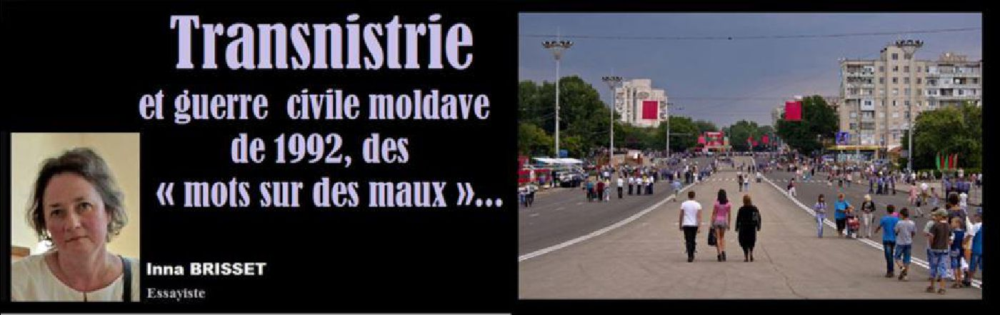
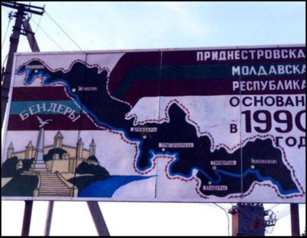
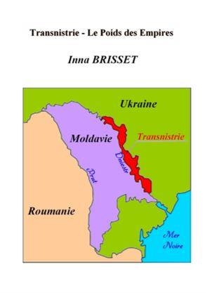
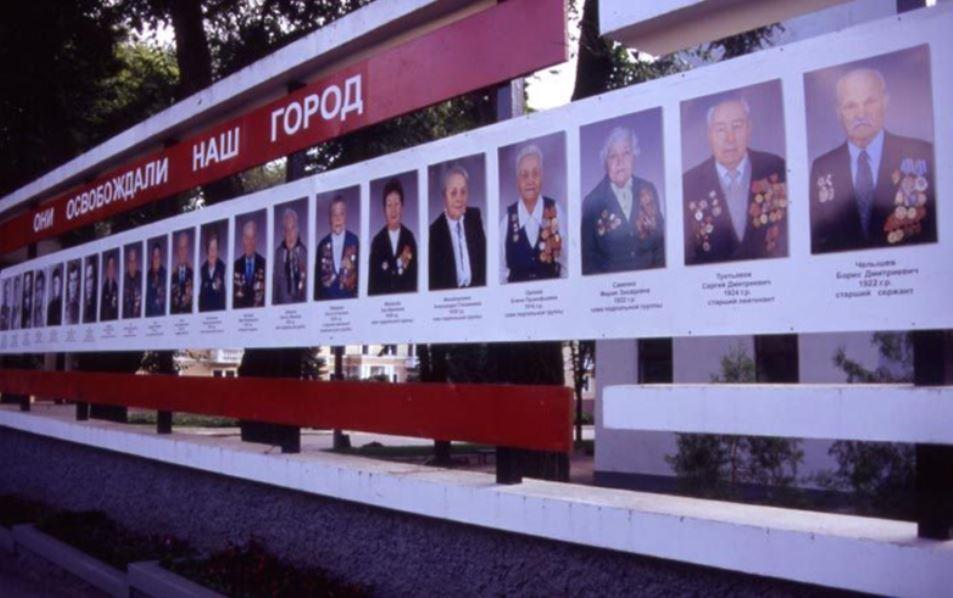
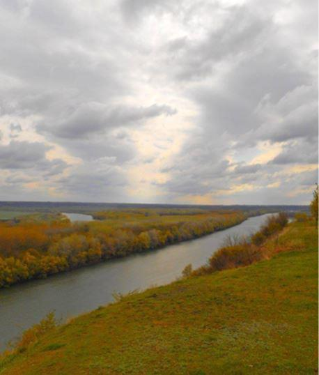
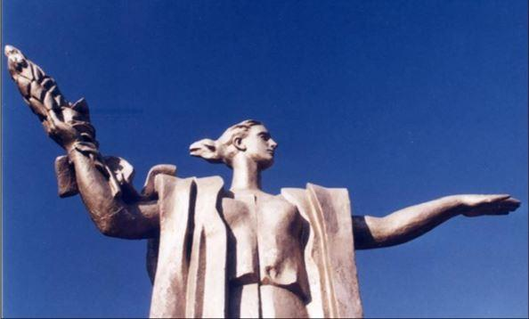

Transnistrie et guerre civile moldave de 1992, des « mots sur des maux »…
par Inna BRISSET

À l'émission « Le dessous des cartes » d'Arte du samedi 19 mai 2018 fut diffusé le reportage : Transnistrie, ce pays qui n'existe pas. Hormis le fait que le nom de la capitale moldave soit toujours aussi mal prononcé, globalement, c'est un travail correct qui fut réalisé. Mon fascicule historique « Transnistrie – Le Poids des Empires » y fut présenté en bibliographie finale.
Celui-ci avait déjà fait l'objet d'un article dans la revue « Sans frontières » de novembre 2016.
J'aimerais aujourd'hui apporter, non pas un nouveau travail d'étude, mais juste un témoignage personnel sur mon vécu d'étudiante dans cette région à l'époque soviétique et les évènements qui marquèrent, en Moldavie, la chute de l'URSS. Ce n'est donc plus l'étudiante universitaire qui s'exprime avec le recul et l’objectivité nécessaires mais plutôt la jeune moldave de l'époque avec son cœur. J'ai pensé que c'était aussi une manière plus humaine de mettre des « mots sur des maux »...
« Je suis née à Odessa en 1968 où j'ai, par là-suite, suivi mes études universitaires (français langue étrangère). Maintenant, j'habitais un petit village de Moldavie (entre la capitale Chisinau et le fleuve Dniestr). Bien sûr que j'étais moldave mais je me suis toujours d'abord considérée comme citoyenne de l'URSS. Pas au sens « doctrinal » (je n'ai jamais fait de politique) mais au sens pratique. Il n'y avait pas de frontières ni de différences entre Ukrainiens, Moldaves, Russes, etc...
J'ai même rencontré de brillants étudiants afghans de l'époque communiste à l'Université d'Odessa. Je garderai toujours de grands souvenirs de mes jeunes années d'étudiante. Le drame, ce fut la guerre civile qui suivit la chute de l'URSS. Les nationalistes moldaves nous ont endoctriné.
Il ne fallait jurer que « Moldavie » seule et cracher sur tout l'héritage soviétique et russe. Même les unionistes avec la Roumanie, pourtant logiques dans leur action car la Moldavie initialement est une province roumaine, n'ont pas pu aboutir à leurs fins et la Moldavie s'est retrouvée isolée du monde. C'est un tout petit état sans économie industrielle. Pas de débouché géographique. Du jour au lendemain, nous sommes devenus le pays le plus pauvre d'Europe ! Les nationalistes ont désigné les russophones comme responsables de l'effondrement économique mais quasiment tout le monde est russophone en Moldavie ! Ils ont aussi pointé du doigt le désengagement de la Transnistrie mais la réalité c'est que la crise économique qui nous est tombée dessus à l'époque, vers 1992, c'est de nous être retrouvés totalement isolés du monde ! Ce n'était pas la Transnistrie seule qui nous faisait vivre, ça, s'est totalement faux ! C'était l'URSS ! Même la Moldavie aujourd'hui avec la Transnistrie resterait un des pays les plus pauvres d'Europe. C'était plus facile pour les Pays baltes très industrialisés avec des débouchés maritimes directs ou vers l'Union européenne. Ils ont pu passer facilement à l'économie de marché mais nous, les Moldaves, il aurait fallu que nous restions rattachés à Moscou ou nous unir à la Roumanie. Ce sont les nationalistes qui ont gagné, ce sont eux les responsables !
Mais le choc épouvantable ce sont ces jeunes garçons de mon âge, une vingtaine d'années en 1992, partis se faire massacrer pour cette guerre absurde contre la Transnistrie. L'armée moldave n'existait que sur le papier. En réalité, elle était constituée de bric et de broc et elle a été envoyée contre la XIVe armée russe stationnée en Transnistrie. C'est un crime des nationalistes moldaves qui ont envoyé à une mort certaine des centaines de jeunes gens... La Transnistrie est russe, soviétique ou ukrainienne, elle est ce que vous voulez mais elle n'a jamais été moldave, sauf de manière artificielle sous sa forme soviétisée en 1945. A l'époque, Staline a détaché la Bucovine moldave et en a fait une province ukrainienne. En retour, il a rattaché la Transnistrie (en fait, la Podolie ukrainienne) à la Moldavie comme « plate-forme » de soviétisation de cette dernière.
La logique - s'il en est une dans ce fatras historique - serait que la Moldavie récupère la Bucovine et qu'ensemble ils rejoignent la Roumanie et que la Transnistrie réintègre l'Ukraine. Pour faire simple, la Transnistrie n'ayant jamais fait partie du monde roumain, il fallait la laisser prendre son autonomie, il fallait la laisser faire !
La Moldavie est un pays charmant, l'accueil y est généreux et simple. Il y existe une tradition viticole ancestrale de qualité reconnue sur un plan international. Je voudrais que le pays (mon pays avec la France car je suis bi-nationale !) s'ouvre, que le tourisme puisse s'y développer mais ce n'est pas un pays riche. Il fut « riche » du temps de l'URSS mais que nous a apporté à l'époque l'indépendance forcée ? La misère et le sang ? »
Partager cette page